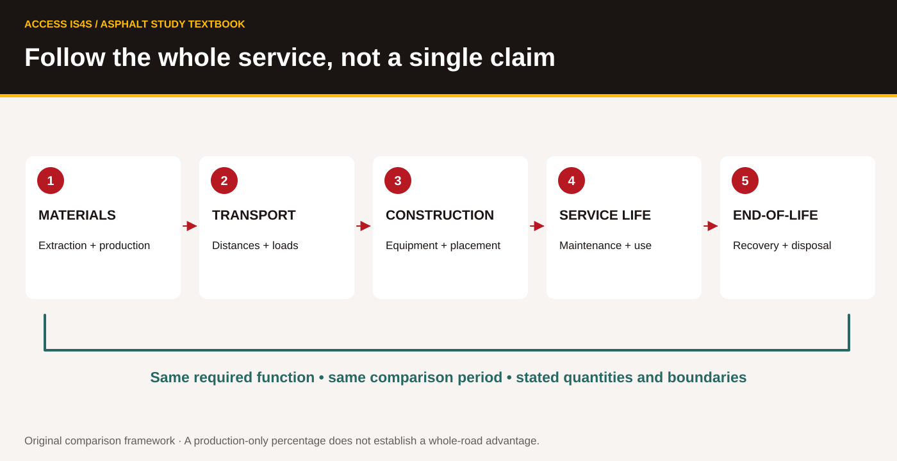

6 · Investigate a paving trend
A6 · Describe future paving/construction trends
Read the trade words, use them in a clear explanation, then keep evidence of your own work.
| Outline learning task | Practise here |
|---|---|
| A6.1 · Describe green roads | LA6-01, LA6-04 |
| A6.2 · Describe new paving materials | LA6-03–04 |
| A6.3 · Describe new sub-bases | LA6-02 |
| A6.4 · Describe floating roads | LA6-02, LA6-04 |
| A6.5 · Describe added value enhancements | LA6-03, LA6-06 |
Turn a promising idea into a testable question
A trend is useful to investigate when it responds to a defined need. A product described as green, new or innovative still needs evidence. Ask what problem it addresses, how it works, where it has been studied, what limits apply and who would approve its use. Something new to a local project may have been used elsewhere for decades. Publication date and location matter.
This unit compares material and design ideas without selecting a live road design. You will prepare a recommendation for further investigation using complete evidence cards and a fictional project brief. A careful recommendation can say that one option deserves a closer technical study while leaving design approval to the appropriate professional.
Keep the outline term and explain the mechanism
| Outline wording | Meaning to investigate in this unit | First useful question |
|---|---|---|
| Green roads | A claim about an environmental purpose or outcome | Which outcome, comparison and time period? |
| Pave stones / paving stones | Individual paving units in a designed system | Does this particular system manage water through its joints? |
| Porous asphalt | A surface with interconnected voids, used within an appropriate pavement system | Where will water go, and how will the system be maintained? |
| Modified asphalt | Asphalt whose binder or mixture has been changed for a defined purpose | Which property changes, and what evidence supports the use? |
| New sub-bases / pumice | Foundation or fill ideas whose actual design role must be established | Is this material proposed as sub-base, embankment fill or something else? |
| Floating roads / Styrofoam | Historical outline wording discussed here through engineered lightweight fill and EPS geofoam | What engineered material and geotechnical design are intended? |
| Street print | A patterned surface treatment or visual enhancement | What are its purpose, performance and maintenance requirements? |
A trade term helps you find the right subject. The project documents establish the actual material and use. Keep sub-base and embankment fill distinct when interpreting the historical cost example below.
Compare surface and reuse approaches
Trend card N1 · Paving stones. Modular paving uses individual units rather than one continuous asphalt layer. Some systems are designed to manage water through joints and underlying layers; the word paver alone does not establish permeability. Ask about the whole pavement system, loading, drainage, accessibility and maintenance. A patterned appearance is not environmental evidence.
Trend card N2 · Porous asphalt. FHWA's April 2015 technical brief describes porous asphalt pavements with stone reservoirs as systems intended to provide a surface and manage stormwater. Water moves through interconnected surface voids into the underlying reservoir. This differs from an open-graded friction course on a dense pavement, where water moves through the surface course and out toward the side. The brief identifies potential clogging and the need for specialized maintenance, as well as site/design limitations. A material name does not guarantee infiltration at an unsuitable site.
Trend card N3 · Recycling. Recovered asphalt may enter an approved plant or specialist in-place process. Recovered concrete may be processed as aggregate. Potential reductions in new-material demand need to be examined alongside processing, transport, suitability, maintenance and end-of-life. “Recycled” is a property of the material pathway, not a complete environmental score.
LA6-01 · Improve three claims
Rewrite these statements so they are bounded and useful: “All paving stones absorb rain”; “Porous asphalt never needs drainage planning”; “Any recycled material is automatically the lowest-impact choice.” For each, identify a mechanism, a condition and one question for a qualified reviewer. Skills: Reading, Problem Solving, Writing.
Ask what a material changes
Trend card N4 · Epoxy, colour and modified asphalt. Epoxy systems, coloured surfaces and modified binders are families of products and applications. Colour can serve appearance or wayfinding, but it does not by itself establish structural performance, skid properties, durability or accessibility. A modified binder may be selected for a particular performance requirement. The full product description, intended use, test evidence, compatible construction system and approved specification are needed before adoption. Do not turn a product family into one universal recipe.
Trend card N5 · Lightweight fill and “floating roads.” Lightweight fill reduces the load imposed by an embankment compared with a heavier fill arrangement. Expanded polystyrene, or EPS, geofoam is one engineered lightweight-fill material. Its use beneath a road does not mean the road floats on open water. The soil, loading, stability, protection, groundwater and installation conditions require geotechnical design. A brand name or generic word such as foam is not a material specification. Pumice is another material encountered in lightweight-fill discussions, with properties and availability that must be checked for the actual source and use.
FHWA's April 2017 Ground Modification Methods, Volume I describes lightweight fills and EPS geofoam. It explicitly states that the publication is not a standard, specification or regulation. Its chapter explains that material properties vary and detailed design requires further testing and evaluation. The examples show that lightweight-fill ideas are not all recent inventions.
Evidence table N6 · One historical U.S. cost example. FHWA's 2017 manual reproduces a Milpitas, California project comparison credited to Cheng 2016. The total costs below include material, transport and longevity costs. They exclude installation and contractor overhead and profit. They are historical U.S. project figures, not current B.C. quotes. The table's dollar figures are retained in their source context; no currency conversion is supplied.
| Material | Reported example total |
|---|---|
| Traditional soil fill | $563,000 |
| Pumice rock | $633,000 |
| EPS-block geofoam | $1,145,000 |
| Expanded shale/clay | $490,000 |
| Wood chips | $545,000 |
| Tire-derived aggregate | $334,000 |
Worked example. In this table, pumice's reported total exceeds traditional soil fill by $633,000 − $563,000 = $70,000. That result answers a question about this historical comparison. It does not establish that pumice always costs $70,000 more, that the cheapest listed option meets a new site's design needs, or that the table includes every cost.
LA6-02 · Read the cost boundary
Calculate the difference between EPS-block geofoam and pumice in N6. Name three reasons the table cannot be used as a current B.C. quotation. Explain why a lightweight-fill cost table does not by itself establish an approved pavement sub-base material. Explain why price ranking alone cannot establish technical suitability. Keep units and the word historical in your conclusion. Skills: Numeracy, Reading, Problem Solving.
Separate an enhancement from a requirement
Trend card N7 · Patterned surfaces. Street-print or other patterned treatments can add a visual effect to a pavement. A visual enhancement may serve a project purpose, but performance claims still need evidence. Ask about the actual treatment, friction, wear, maintenance, access needs and compatibility with the underlying system. A decorative pattern is not evidence of structural strengthening or permission to use a cultural design. Any community-specific image or knowledge requires appropriate permission.
LA6-03 · Make a product enquiry
Choose N4 or N7 and draft five questions for a fictional supplier. Include intended use, product identity, evidence, maintenance and approval/permission. Make one question specific enough that a vague marketing answer would be recognizable. Keep the enquiry local; no message is sent. Skills: Writing, Communication, Creativity and Innovation.
Apply the evidence to a defined case
Fictional project N8 · A learning-centre courtyard. A facility team is considering a 600 m² courtyard used by pedestrians and occasional authorized service vehicles. The team wants to improve surface-water management and readable wayfinding. No geotechnical investigation, infiltration test, approved loading design, maintenance budget or cultural-design permission has been supplied. The project budget is not yet set. A promoter offers porous asphalt, coloured asphalt or an EPS-supported pavement as three “green” options. These options address different questions and are not interchangeable solutions.
FIGURE T19
Follow the whole service, not a single claim

LA6-04 · Compare options against the actual need
Make a table for the three offers. State the problem each might address, evidence provided in N1–N7, missing project information and the reviewer needed. Select one or two ideas for further investigation, with reasons. Do not approve construction or claim a total environmental winner. Each learner contributes an evidence-based question before the group makes its shortlist. Skills: Problem Solving, Collaboration, Reading.
LA6-05 · Adapt to a new constraint
The fictional facility manager says there is no commitment to specialized pavement-cleaning equipment and asks for a maintenance plan before further consideration. Revise your shortlist or investigation plan. Explain why this new fact is relevant to porous asphalt and why it does not automatically approve another option. Skills: Adaptability, Communication, Problem Solving.
LA6-06 · Build an evidence brief and test its clarity
Create a one-page brief containing the project question, one proposed investigation, a supported benefit, a limitation, missing information and a next decision. Add source titles/dates from the research record and mark predictions as predictions. Save and reopen the file if using Digital. Ask a partner to identify what you are recommending and what you are leaving undecided; revise one unclear sentence. Skills: Writing, Digital, Communication, Creativity and Innovation.
Keep the claims you improved, historical comparison, supplier questions, option table and revised brief. A useful innovation record shows the question, evidence, trial or investigation needed and the limits of the conclusion.